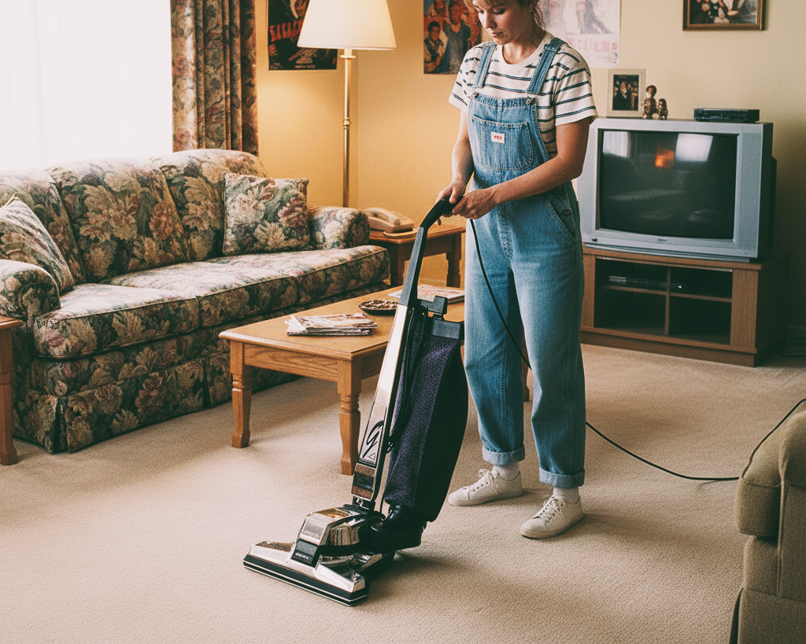
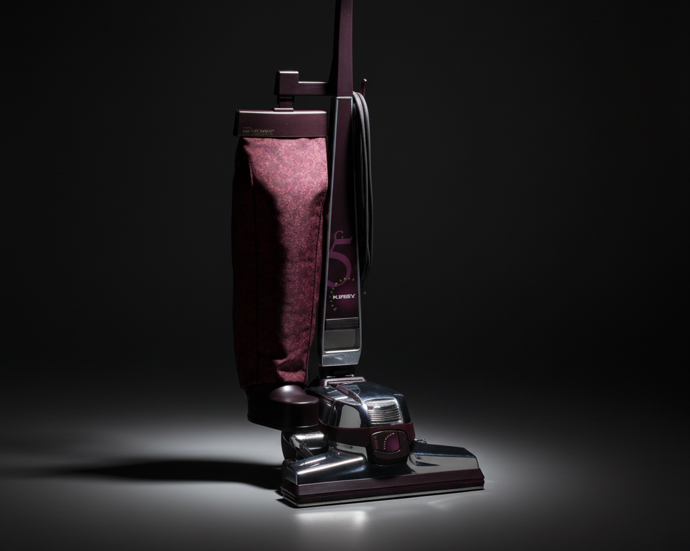
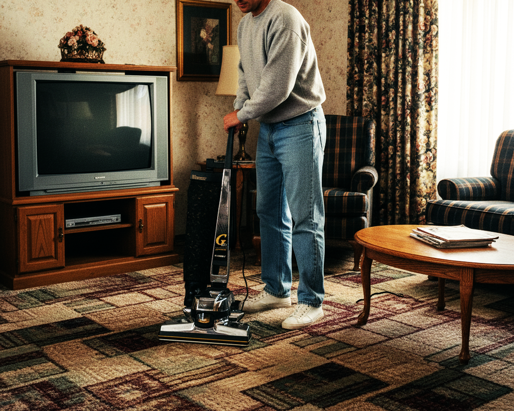
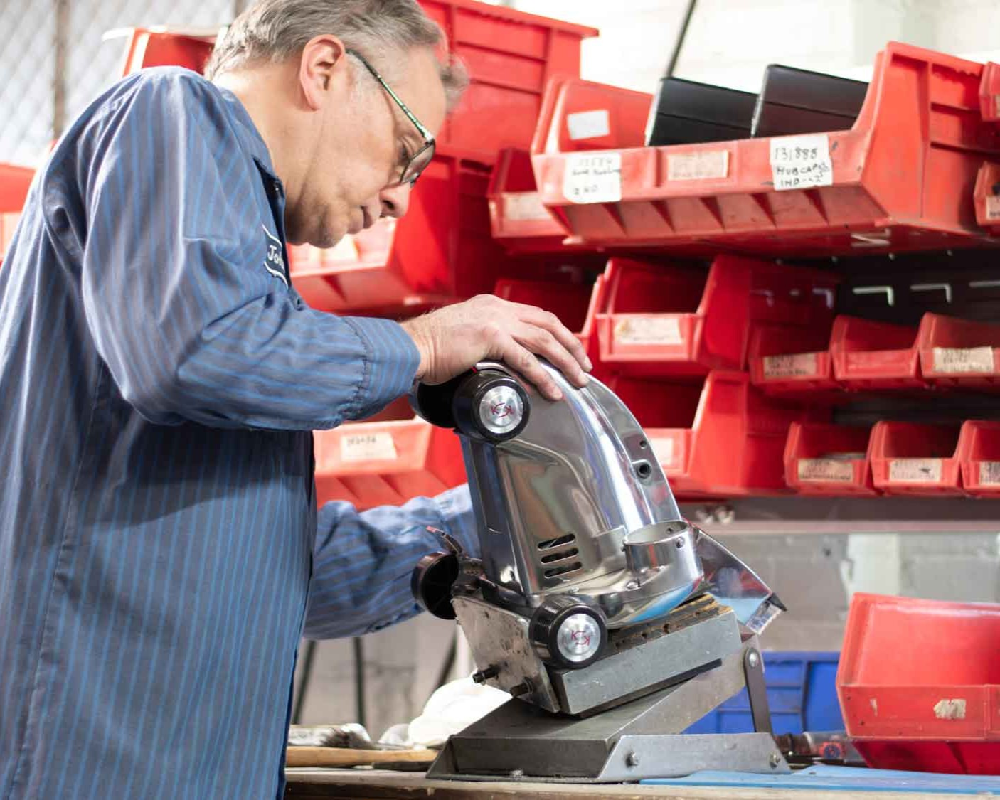
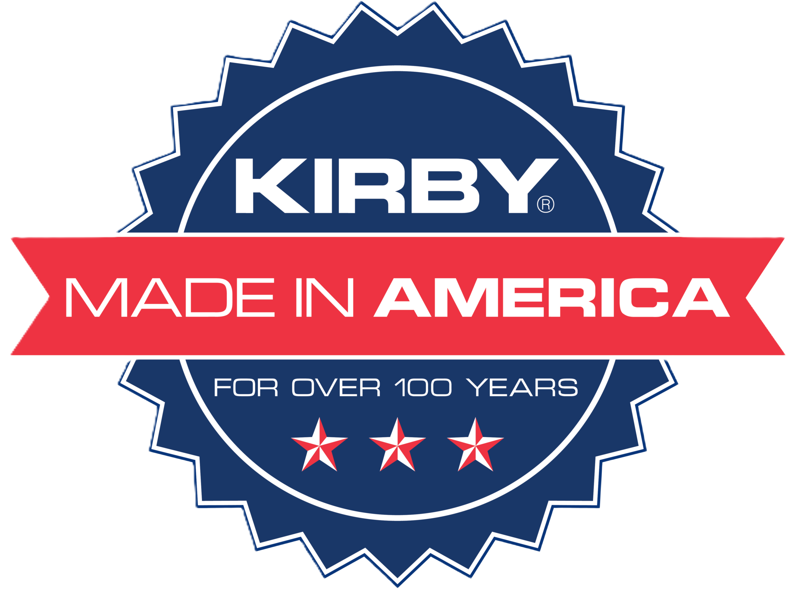
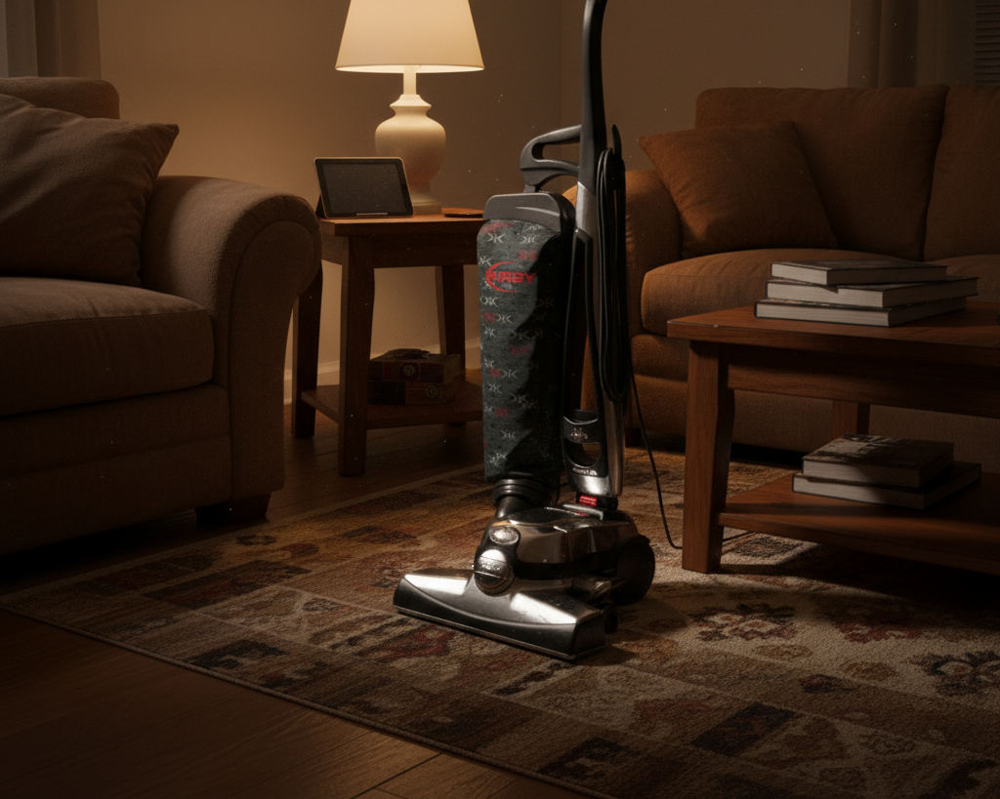
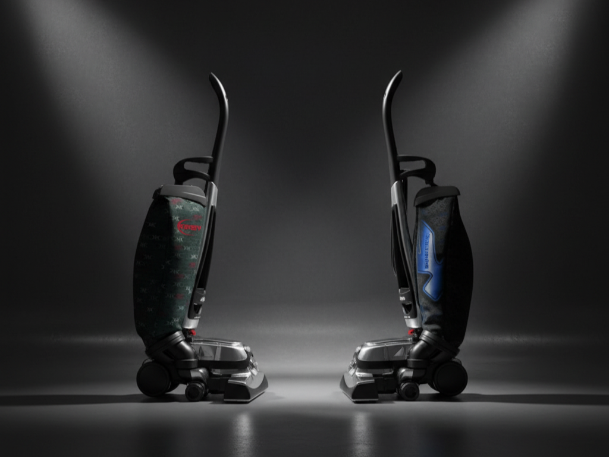
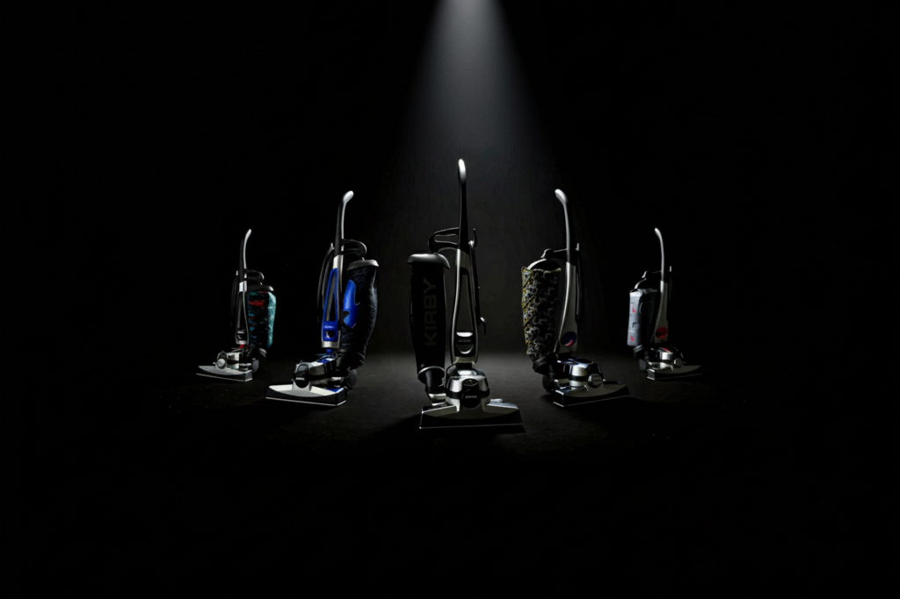

Први чекори
Винком ја донесе компанијата Кирби во Македонија во 1992 година, започнувајќи ја својата работа со моделот G3 – уред што постави сосема нов стандард за хигиена во домот. Во период кога напредните системи за длабинско чистење беа речиси непознати, G3 привлече внимание преку домашните презентации, каде што семејствата можеа директно да се уверат во неговата моќ и ефикасност. Овие демонстрации станаа препознатлив знак за Винком, бидејќи токму на терен се покажува вистинската вредност на производот. Како фабрички овластен дистрибутер на Кирби со сопствен сервис и целосна поддршка за оригинални резервни делови и потрошен материјал, Винком изгради стабилна основа за доверба со своите клиенти. Нивната долгорочна посветеност на еден производ е силен доказ за квалитетот што го нudi системот. Со повеќе од три децении присутност на македонскиот пазар, компанијата докажува дека вложувањето во Кирби е инвестиција која постојано се исплатува.
Созревање
Година по успехот на G3, во Македонија пристигна G4 – подобрена верзија со модерен дизајн и практични механички унапредувања. Моторната асистенција значително го олеснуваше користењето, додека конструкцијата овозможуваше стабилни перформанси и долговечност. Деталните демонстрации во домовите ги запознаа корисниците со функционалноста на апаратот, што ја зголеми довербата во брендот и ја зацврсти позицијата на Винком на локалниот пазар. G4 стана модел кој ја обединува удобноста, ефикасноста и квалитетот, поставувајќи стандарди за следните генерации на Kirby апарати.

NASA?
По успешниот G4, следеше G5 – модел препознатлив по темната виолетова боја и иновативниот вентилатор изработен од „Lexan“ материјал развиен со помош на технологија од NASA. Овој напредок овозможи поголема моќ на вшмукување и издржливост. Корисниците брзо го прифатија поради неговата сигурност и ефикасност, додека Винком ја продолжи мисијата да ја приближува најсовремената технологија до македонските домови. Презентациите дома им овозможија на клиентите лично да се уверат во иновациите и квалитетот на G5, зацврстувајќи доверба и лојалност кон брендот.

Нови можности
Gsix донесе посовремен изглед и подобрена четка за порамномерно и подлабоко чистење. Преносливиот шампонирач овозможуваше подобар резултат на меките подови, а апаратот го зголеми комфорот и ефикасноста. Клиентите бргу ја забележаа разликата во квалитетот, додека Винком преку редовна поддршка, сервис и оригинални делови ја одржуваше довербата во брендот. Gsix се истакна како модел што ја комбинира иновацијата и практичноста, обезбедувајќи стабилно и долгорочно решение за македонските семејства кои бараат квалитетно длабинско чистење.

Моќно дуо
По повод 10 години постоење, Винком ги претстави Ultimate G и Diamond Edition – два различни модели со ист фокус на квалитет и издржливост. Ultimate G нудеше стабилност, моќ и оптимална филтрација, додека Diamond Edition се истакнуваше по потивок режим и филтри за чувствителни површини. Двете верзии им овозможија на клиентите да изберат апарат што најмногу им одговара, додека Винком обезбеди сервис, поддршка и резервни делови. Со оваа понуда, компанијата ја потврди својата позиција како доверлив партнер и лидер во домашната хигиена.
Ново ниво
Sentria донесе модерен и елегантен изглед, со LED светла, редизајнирана рачка и подобрена ергономија. Новите алатки овозможуваа поефикасно чистење на мебел и текстилни површини, што го направи моделот омилен меѓу корисниците. Признанието од Carpet and Rug Institute дополнително го потврди неговиот квалитет. Винком обезбеди професионален сервис и целосна поддршка, овозможувајќи доверба и сигурност за секој корисник. Sentria стана модел што ја спојува удобноста, ефикасноста и модерниот дизајн, продолжувајќи ја традицијата на квалитет во Македонија.
Тука кога најмногу треба
Во 2011 година, Винком ја формира својата прва специјализирана служба за грижа на корисници. Тимот обезбедуваше теренска помош, брза достава на потрошен материјал и стручни совети за правилно користење на апаратите. Оваа услуга го подигна искуството на клиентите на ново ниво и ја зацврсти врската со купувачите. Со фокус на доверба и поддршка, Винком постави нов стандард за грижа кон корисниците, овозможувајќи секој клиент да биде сигурен дека добива експертска поддршка и долгорочно решение за чистење.

Години Винком
2 децении
Sentria II пристигна токму кога Винком славеше две децении работа. Моделот се истакнуваше со практичен дизајн, лесна употреба и стабилна моќ на моторот, особено погоден за помали домови и чувствителни површини. Новите пакети со додатоци и HEPA филтер кеси овозможија почист воздух и поголема удобност за корисниците. Винком обезбеди комплетна поддршка и сервис, продолжувајќи ја довербата на клиентите во квалитетот на Kirby системите. Sentria II ја спои практичноста и ефикасноста во еден апарат што станува доверливо решение за секое семејство.
Симбол за трајност
Во 2014 година, Kirby го одбележи својот јубилеј – 100 години иновации, патенти и квалитет. Истовремено, Винком веќе 22 години го претставуваше брендот во Македонија, создавајќи силна врска со локалните корисници. Овој спој на глобалното наследство и домашното искуство потврди посветеност кон сигурност, квалитет и континуирано усовршување. Јубилејот ја истакна важноста на традицијата и иновацијата, потврдувајќи дека довербата на клиентите е резултат на децении посветена работа и квалитетни производи кои успешно комбинираат технологија и практичност.

Совршено, во секоја смисла
Avalir донесе препознатлив баланс на сила, издржливост и практичност. Моделот нудеше стабилен мотор, едноставно ракување и широки можности за чистење на различни површини. Клиентите ценат неговата ефикасност, практичност и можност да се прилагоди на секое домаќинство. Винком го претстави како доверливо решение за домашната хигиена, со целосен сервис, оригинални делови и експертска поддршка. Avalir продолжува да ја зацврстува репутацијата на компанијата како лидер во квалитетното и сигурно длабинско чистење во македонските домови.

Може ли подобро
Може. Avalir 2 го покажа постојаното унапредување на функционалноста и дизајнот. Со нови ергономски решенија, 15 алатки и напреден систем за шампонирање, моделот овозможува поефикасно и подлабоко чистење на сите површини. Клиентите ја ценат практичноста, удобноста и издржливоста, додека поддршката на Винком овозможува долгорочно и сигурно користење. Avalir 2 стана еден од најценетите апарати за домашна хигиена на македонскиот пазар, комбинирајќи иновации, квалитет и доверба во секојдневното чистење.

3 децении посветени
Во 2022 година, Винком го прослави својот тридесетгодишен јубилеј како водечки претставник на Kirby во Македонија. Три децении посветена работа донесоа стабилна врска со клиентите, иновативни решенија и континуирана грижа за корисниците. Со комбинирање на традиција, искуство и модерни технологии, Винком ја потврди својата репутација како доверлив партнер кој секогаш овозможува висок квалитет на услуги, професионална поддршка и најдобри решенија за домашна хигиена.
Нов член
Во 2024 година, Kirby ја претстави својата најнова гордост — моделот Kirby Avalir Platinum, како дел од долгата традиција на квалитет и иновација. Овој „најлесен Kirby досега“ ја донесе врвната изработка, моќна вшмукувачка сила и модерен дизајн, подготвен за современи домови. Винком, како овластен дистрибутер, веднаш го воведе Platinum на македонскиот пазар, нудејќи го преку презентации и обезбедувајќи оригинални додатоци и сервис. Со тоа, Винком повторно ја потврди својата посветеност да им донесе на клиентите најново и најдобро од светот на домашната хигиена.

Во чекор со времето
До ден денес, Vinkom е водечка сила на македонскиот пазар за Kirby системи. Со влог на континуирана поддршка, брз сервис, достапни оригинални делови и модерни модели — ги задржуваме довербата и лојалноста на своите клиенти. Додека светот се менува, ние остануваме доследни: секој нов корисник добива ист квалитет и грижа како оние од првиот ден. Нашата мрежа се шири, сегашните и идните потрошувачи ја препознаваат Винком како сигурен партнер за долгорочно чистење, поддршка и удобност.